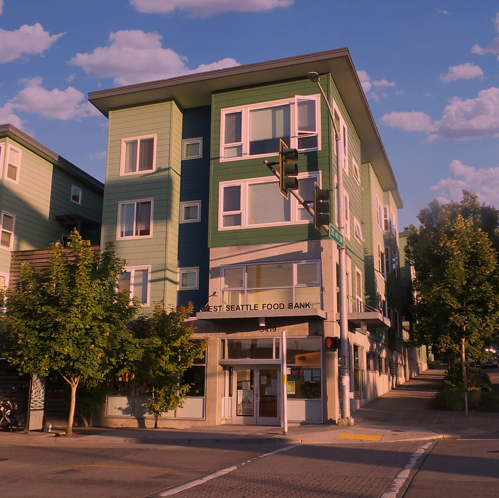

West Seattle Food Bank
West Seattle Food Bank was founded in 1983. They are a group of individuals who strives to ensure their neighborhood do not starve. West Seattle has now served over thousands of people each year and collaborated with the Delridge Neighborhoods Development Association (DNDA), launched the Three Projects/One Community capital campaign, and helped build the West Seattle Community Resource Center, Croft Place Town-homes and the Youngstown Cultural Arts Center. To this day, West Seattle Food Bank continues to serve their community in Seattle while guaranteeing their people do not go hungry.
Website
https://westseattlefoodbank.org/
Address
3419 Southwest Morgan Street, Seattle, WA 98126
Phone Number
206-932-9023
Open/Closed Status
Open
Hours of Operation
Food Distribution Hours:
Tuesdays: 9:00 am – 1:00 pm
Wednesdays: 10:00 am – 3:00 pm
Thursdays: 9:00 am – 2:00 pm
Fridays: 10:00 am – 2:00 pm
Office & Donation Hours:
Monday – Friday: 9:00 am – 3:00 pm